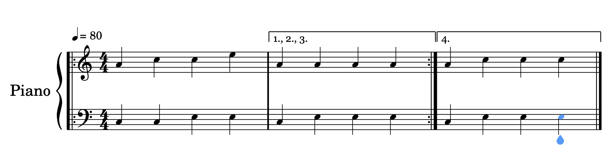
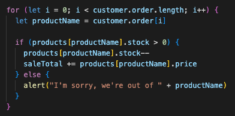
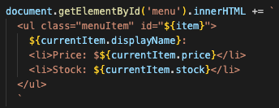
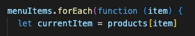
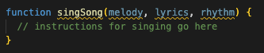

14 April 2023
HTML and CSS give structure and aesthetic to apps- they define what elements you have on a page, like buttons, text fields, logos etc., and how they look- what their colour is, what size they are and so on. JavaScript is the way in which these elements are able to 'do' things- it's the instructions for what happens under the hood when a button is clicked, like adding two numbers together, or sending an email.
In this way, JavaScript is like the engine of a car- it is the source of power that makes the car move in the way you expect to when you press the accelerator, or turn the steering wheel. Otherwise it would be a stationary object unable to be used for its intended purpose.
HTML and CSS are like the cupboards and drawers in your kitchen. They are nicely organised to store all your cutlery, utensils, pots and pans etc. When you want to cook a meal, you can access these things from their respective drawers- You follow a process, and put them back when you're done. You can buy new things to put in the drawers, or give away/dispose of items that you don't need to keep. JavaScript can act in this way too, by accessing and changing things stored within the structure of the HTML and CSS.
'Control flow' refers to the order in which code is executed. 'Loops', for example, will cause the code to return to a certain point and repeat an action. 'Conditionals' will tell certain code to execute if given conditions are met.
You can picture control flow in relation to how you might read a novel, vs. a 'choose your own adventure' game. You would read a novel from the beginning, through to the end, ideally without jumping forward or backward. A choose your own adventure game would give you instructions on which page to skip to, to continue on your chosen path.
Languages that read start-to-finish, like a novel, are called declarative languages. HTML and CSS are examples of declarative languages. JavaScript, and other languages which allow for the control flow to be manipulated within the code are called procedural.
For all you musicians out there, procedural languages with their loops and conditions are a bit like music notation. In the example below, the piano plays the first two bars 3 times (the :|| signifies a repeat), but on the fourth repeat, first bar is played followed by the third bar, as an alternate ending.
Below is a screenshot from the JavaScript café exercise. It shows a loop that repeats as many times as the length of an order. If there is stock available for the chosen items, they will be added to the order. Otherwise, an alert will be issued saying that there's no more of that item left. this is an example of control flow changing with loops and conditionals.
The DOM refers to the Document Object Model. It's like a family tree, with the 'document' at the top, and everything else branches out from there.
In html code, all the elements within the code are between html tags. It's like a container, and within that there are other elements, which in turn can contain other elements, that can contain other elements and so on.
The DOM is like another container at the top of the hierarchy. The DOM contains the html and all it's elements, also the CSS and all it's classes. This model allows JavaScript to navigate the hierarchy and manipulate the elements dynamically. The DOM, and it's structure, is like a map to all the containing elements.
For instance, you might want to generate some text inside a given paragraph. To do this with JavaScript, you'd need to define which paragraph you want to change, by using the DOM, and then specify the text you want to add, with .innerHTML. The code below finds the 'menu' paragraph by giving the 'directions' document>menu, and the instruction innerHTML, followed by html text to insert an unordered list.
Objects and arrays are similar but have some important differences. Both objects and arrays contain multiple 'things' within them-
Objects contain key-value pairs, which could be 'name: Chris', where 'name' is the key, and 'Chris' is the value.
Arrays contain variables. Each variable within an array has an index, a number which defines the position of a variable within the array. Eg., an array could store three strings 'a', 'b', and 'c'. The index of 'a' would be 0 (as arrays count from zero), 'b' would have an index of 1, and 'c' would be 2.
To access data from an object, the format would be something like object.key.value
For arrays, you might use array[index], to specify the name of the array, and the index of the thing you want to access.
Sometimes you can utilise both objects and arrays. In the below example, strings from a variable 'menuItems' are used to find a set of key names within the 'products' object.
Functions are blocks of code that perform repeatable actions that you may want to 'call' at specific times. For example, you might want to add together two numbers when a button is pressed. The numbers you're adding might be different each time you add them, but the operation of addition will be the same each time. Making a function for this is helpful because it means you can refer back to the same set of instructions, with different 'parameters'.
To make an analogy- Say you want to sing a song. We can assume that any song you want to sing will have melody, lyrics and rhythm. They would be the 'parameters'. The process of singing is to use these three parameters to produce sound. If we wrote this like a function, it would look like this:
We can 'call' the function whenever we like, and for each of the parameters, we would 'pass in an argument', depending on the song.